Shadow Man EX Tools v2.1.0 Documentation
By BehemothProgrammer
Level Overview

Toolbar Header
From Left to Right:
|
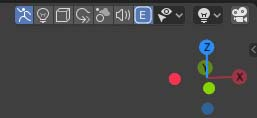 |
|
Additional info about editing multiple objects at once
| If you see this icon next to a property it means that when you set the property all selected objects will automatically have there property set to the same value as well. And right clicking and selecting 'Copy to Selected' will do nothing. In order to set other properties for all selected objects you must do it the normal Blender way of right clicking on the property and selecting ''Copy to Selected' |
Event Links
| 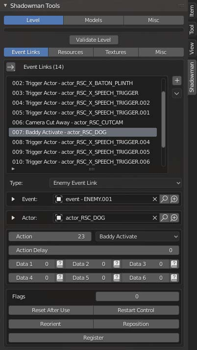 |
To edit Event Links open the Shadow Man Tool Panel by pressing N in any 3DView. Then Select an event link or add one using the + icon button on the right.
|
items.txt (Custom Level Actors)
| 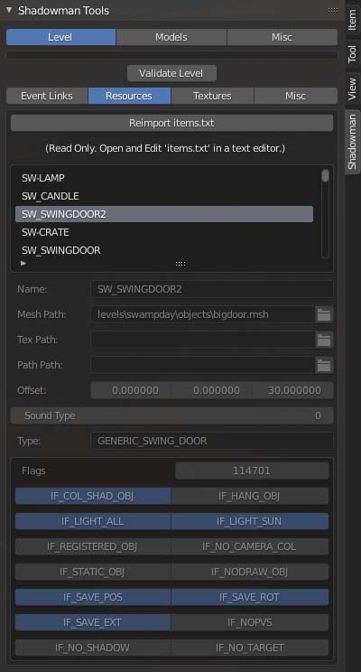 |
To view currently loaded Resources open the Shadow Man Tool Panel by pressing N in any 3DView. Then select the Resources Tab. Here you can view all the custom actors for this level which was imported from the items.txt file. Edit the levels items.txt to edit these and you can reimport them into the level after you make changes to the items.txt by clicking the "Reimport items.txt" button. |
Texture Properties
| 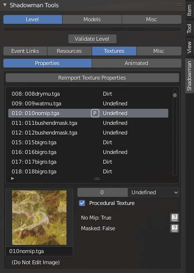 |
To view the levels texture properties open the Shadow Man Tool Panel by pressing N in any 3DView. |
Animated Textures
| 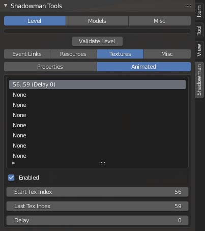 |
To view the levels animated textures open the Shadow Man Tool Panel by pressing N in any 3DView.
|
Actors
| 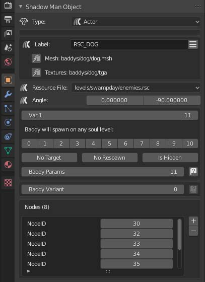 |
When you select an actor you may see green colored lines connecting to an Event object indicating it is linked to one another. As well you may see cyan colored lines connecting to Path Nodes that the actor Baddy is using if any.
|
Lights
| 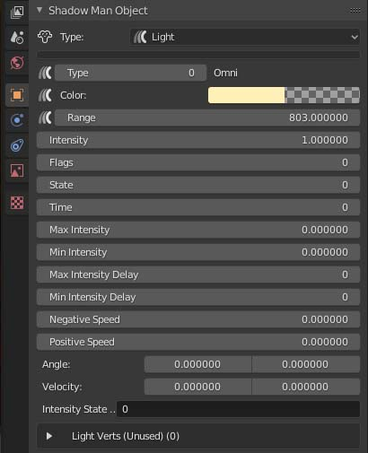 |
When you select lights you will see a colored wire frame sphere around the light indicated it's range of influence. Hover over properties to see tooltips.
|
Detect Boxes
| 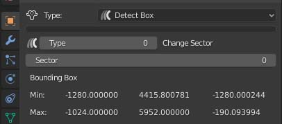 |
These are volumes that when the Player or Camera enters them will effect the game or player in some way. Edit the box volumes in blender in edit mode or positioning/scaling in object mode.
|
Path Nodes
| 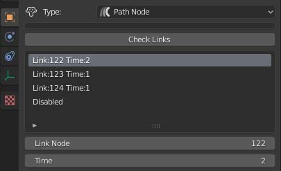 |
Select a Path Node to see colored lines that this path node is linked to. Select 1 of the 4 links in the list to edit the node and time properties for that link.
|
Sounds
When you select a Sound object you will see a wire frame sphere around it indicating it's range of influence. Note: There are other ways to add sounds to the environment such as adding the actor RSC_LOOPING_SAMPLE
Looping Sample Pos
| 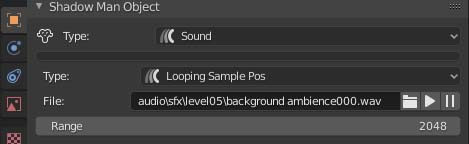 |
|
Sound Source
| 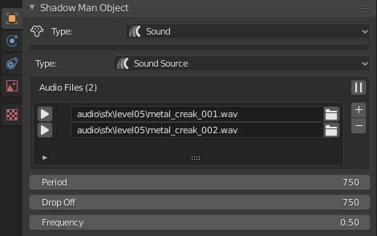 |
|
Events
| 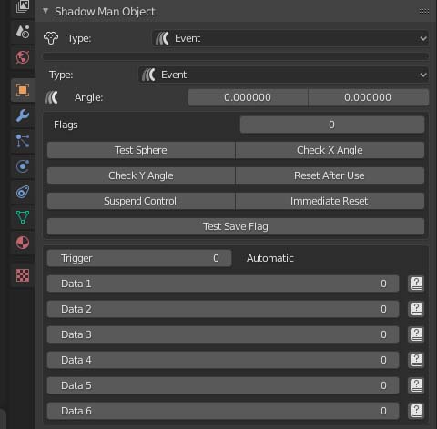 |
These are volumes that when the Player enters them will trigger event links from this event to it's target actors. Edit the box volumes in blender in edit mode or positioning/scaling in object mode.
The following 6 Data fields will be specific to the event type. Click the ? Book Icon for help about the fields. |